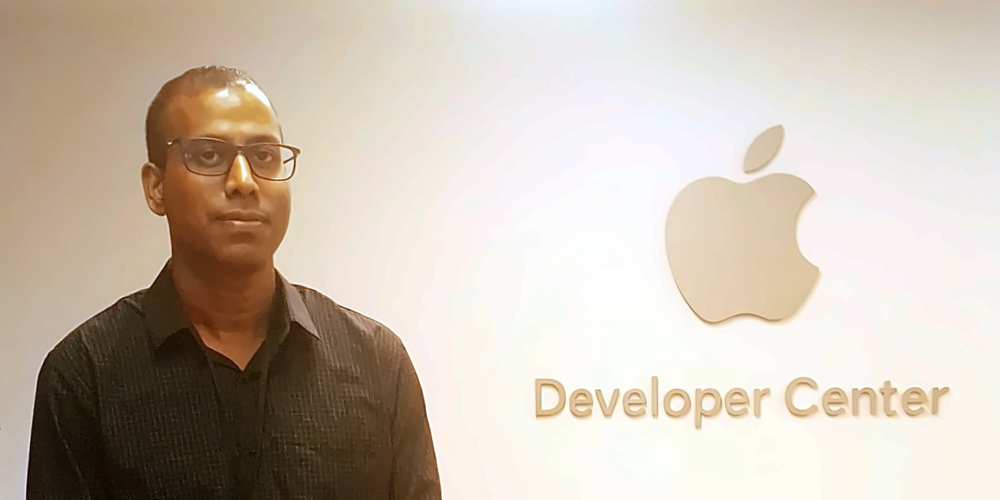

Build AI agents
I design and build AI agents in Python with Microsoft Foundry: single agents, function tools, and agents that work together.
Projects: MotherWell, OnboardIQ
シヴァプラサード・G
Microsoft Certified Trainer and Python developer, Kerala, India

日本語は現在勉強中です（初級）。このページの日本語は翻訳ツールを使って作成しました。
I help people and teams adopt AI. I build AI agents on Azure, and I train the people who use them.
Python developer with one year of professional experience and hands-on experience with Azure AI agents. Microsoft Certified Trainer since 2020.
I design and build AI agents in Python with Microsoft Foundry: single agents, function tools, and agents that work together.
Projects: MotherWell, OnboardIQ
As a Microsoft Certified Trainer since 2020, I turn new technology into hands-on sessions that people can follow and use at work.
Experience: corporate, one-to-one and college training
For a convention and events venue, I built the website and the Python back-end for customer enquiries, and advised on Google Business Profile and digital tools.
Experience: one year, full time
Blood reports are hard to read, so it is hard to know what to ask the doctor.
A mother enters the values from her report and gets clear questions to take to her doctor. It suggests questions; it does not diagnose.
Two agents split the work. The Analyser checks each value with a function tool. The Planner sees only the flagged results, never the full report, so less personal health data moves between agents.
Idea, product design and agent design. Built in Python on Microsoft Foundry with AI-assisted coding.
A WhatsApp version, so mothers can use it without installing an app.
View the code on GitHubcheck_values tool and flags anything outside the rangeA four-agent platform for enterprise employee onboarding, built on Azure AI Foundry with a Streamlit interface.
A multilingual classroom-support agent built on Azure.
Oct 2024 – Nov 2025
Convention and events venue, Kozhikode. Full time.
2018 – 2024
Independent
Corporate and one-to-one IT training, including a corporate training engagement in Bangkok with The Knowledge Academy in 2018.
Microsoft Certified Trainer
Microsoft, since 2020
Languages: Malayalam (native), English (professional), Japanese (beginner; studying the Japan Foundation's Marugoto A1-1 course, aiming for JLPT N3).
One-day, hands-on sessions for colleges and teams. Every participant builds something real by the end of the day, using free tools and simple language.
Core AI ideas and responsible AI, aligned to the Microsoft AI-901 Azure AI Fundamentals exam. Participants build a small AI app on Azure.
How agents use tools and instructions, from a single agent to two agents working together, like the ones in MotherWell.
Create a GitHub account, make a repository and put a personal website live on GitHub Pages, the same way this site is published.
I'm open to roles in DX consulting, technical training and Python or Azure AI development, and to workshop invitations. Email is the quickest way to reach me.
sivaprasad.g@live.com